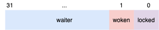

Go 语言实现——Mutex¶
正常模式¶
先看 Go1.8 的 Mutex 实现，这个版本的 Mutex 实现还比较简单，1.9 开始 Mutex 加入了一个饥饿模式的优化，这个后面再说。
Mutex 定义如下：
type Mutex struct {
state int32
sema uint32
}
其中 state 为当前 Mutex 的状态，sema 是解锁信号量。
state 的状态位定义如下：
const (
mutexLocked = 1 << iota // mutex is locked
mutexWoken
mutexWaiterShift = iota
)
从最低位开始：
- 第一个比特位表示“当前 Mutex 是不是已经上锁”。
- 第二个比特位表示“当前有 goroutine 处于自旋或者收到解锁信号目前处于运行状态”。
- 剩余的位用作计数器，存当前有多少 goroutine 正在等待解锁的信号量。
Mutex 上锁的逻辑如下：
- 首先使用 CAS 尝试上锁，如果成功直接返回。
- 如果失败，自旋几次等待解锁并重新尝试上锁。
- 自旋次数太多后，将 goroutine 睡眠，等待 Unlock 发信号唤醒。
func (m *Mutex) Lock() {
// CAS 尝试上锁，成功直接返回
if atomic.CompareAndSwapInt32(&m.state, 0, mutexLocked) {
return
}
awoke := false
iter := 0
for {
old := m.state
new := old | mutexLocked
// 如果锁已经被其它 goroutine 持有了
if old&mutexLocked != 0 {
// 检查当前 goroutine 能不能够自旋
if runtime_canSpin(iter) {
// 设置 woken 标示位，告诉 Unlock 不用唤醒 goroutine
// 有 goroutine 处在运行状态
if !awoke && old&mutexWoken == 0 && old>>mutexWaiterShift != 0 &&
atomic.CompareAndSwapInt32(&m.state, old, old|mutexWoken) {
awoke = true
}
// 一次自旋等待解锁
runtime_doSpin()
iter++
continue
}
// 不能自旋，计数器 + 1
new = old + 1<<mutexWaiterShift
}
// 如果 mutexWoken 被置位的话，清除标志位
if awoke {
new &^= mutexWoken
}
// 尝试加锁或者睡眠等待解锁信号
if atomic.CompareAndSwapInt32(&m.state, old, new) {
// 加锁成功，返回
if old&mutexLocked == 0 {
break
}
// 睡眠 💤 等待解锁信号
runtime_SemacquireMutex(&m.sema)
// 收到解锁信号，回循环开始重新开始尝试加锁
awoke = true
iter = 0
}
}
}
要进入自旋也是有条件限制的：
- 自旋的次数小于 4（别一直自旋，浪费 CPU）。
- 运行在多核机器上（单核机器自旋没有意义）。
- 其它逻辑线程 P 至少得有一个处在工作状态，而不是都在无所事事（加上下面的条件 4，如果都在无所事事，那么自旋等也等来不来解锁的，除非有新的 goroutine 进来，所以这种情况下还是睡眠等信号吧）。
- 当前 goroutine 归属的逻辑线程 P 上只有当前 goroutine 一个，没有其它了。
func sync_runtime_canSpin(i int) bool {
if i >= 4 || ncpu <= 1 || int32(sched.npidle+sched.nmspinning)+1 >= gomaxprocs {
return false
}
if p := getg().m.p.ptr(); !runqempty(p) {
return false
}
return true
}
自旋就是执行 30 次 PAUSE 指令。
func sync_runtime_doSpin() {
procyield(30)
}
TEXT runtime·procyield(SB),NOSPLIT,$0-0
MOVL cycles+0(FP), AX
again:
PAUSE
SUBL $1, AX
JNZ again
RET
而解锁的逻辑就是：
- 首先解锁。如果等待锁的 goroutine 有在运行状态的，直接返回就行。
- 如果没有，那么使用信号量给等待的 goroutine 发送个信号。
func (m *Mutex) Unlock() {
// 解锁
new := atomic.AddInt32(&m.state, -mutexLocked)
old := new
for {
// old>>mutexWaiterShift 是当前等待解锁信号量的 goroutine 计数器
// 如果没有等待解锁信号量的 goroutine，或者刚解的锁已经被其它 goroutine 重新上锁
// 或者有在自旋等待锁的 goroutine，直接返回。
if old>>mutexWaiterShift == 0 || old&(mutexLocked|mutexWoken) != 0 {
return
}
// 等待解锁信号量的 goroutine 数减 1 并且设置“已经有 goroutine 唤醒”标志位。
new = (old - 1<<mutexWaiterShift) | mutexWoken
if atomic.CompareAndSwapInt32(&m.state, old, new) {
runtime_Semrelease(&m.sema)
return
}
old = m.state
}
}
https://github.com/golang/go/blob/release-branch.go1.8/src/sync/mutex.go
饥饿模式¶
上面正常模式运行下的 Mutex 有一个问题，就是通过 runtime_Semrelease 信号通知的等待锁的 goroutine 相比于自旋正在等待锁或者运行中的等待锁的 goroutine 有点弱势，因为收到信号后 goroutine 并不是立刻运行，只是被加入了可运行队列，抢锁就很容易抢不过正在 CPU 上运行着的 goroutine，因此 Go1.9 之后 Go 新加了一个饥饿模式，在这个模式下，通过 runtime_SemacquireMutex 唤醒的 goroutine 会检查自己等待锁的时间是不是太长了，如果是那么就将锁的争抢模式改为“饥饿模式”，禁止自旋，所有等待锁的进程都排排坐吃果果。另外，runtime_SemacquireMutex 的时候将自己直接加到等待队列的前面，优先获取锁。
详细参见：